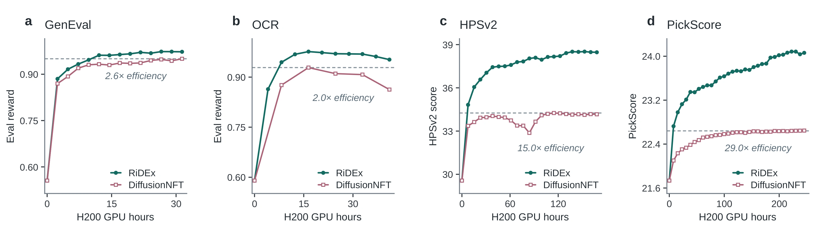

Diffusion reinforcement learning
RiDEx.
Reward-Informed Directional Exploration
for Diffusion Reinforcement Learning
1University of Science and Technology of China2Li Auto Inc.3Huazhong University of Science and Technology4Tongyi Lab5Xi'an High-tech Research Institute
† Corresponding authors
01 / Training
Better rewards. Less compute.

02 / Generations
The difference, side by side.
Same prompt. Same seed. Standard inference.
a photo of five apples
Selected qualitative examples, not an aggregate preference study. Generation settings and checkpoints
03 / The idea
Useful directions.
State-matched learning.
RiDEx uses conditional residuals or reward gradients to propose exploration directions. Opposite interventions from the same diffusion state reveal their terminal reward effect. That contrast supplies local training credit, alongside global DiffusionNFT learning.
Abstract
Reward-based diffusion post-training relies on diverse samples, but not every change is relevant to the target reward. RiDEx concentrates local exploration in reward-relevant subspaces of the denoising velocity field. Conditional residuals or differentiable reward gradients propose directions; equal-and-opposite perturbations at the same generation state measure their terminal reward response. The resulting signed contrast supervises the explored velocity coordinates, while all generated images contribute to global DiffusionNFT learning. We evaluate alignment and preference objectives on Stable Diffusion 3.5 Medium.
Cite this work
@misc{yan2026ridex,
title={RiDEx: Reward-Informed Directional Exploration
for Diffusion Reinforcement Learning},
author={Yan, Song and Wang, Chenfeng and Zhai, Wei and
Wang, Xingchen and Zhang, Tao and Shao, Yawen and
Pan, Shi and Li, Min and Zha, Zheng-Jun},
year={2026},
note={Preprint}
}